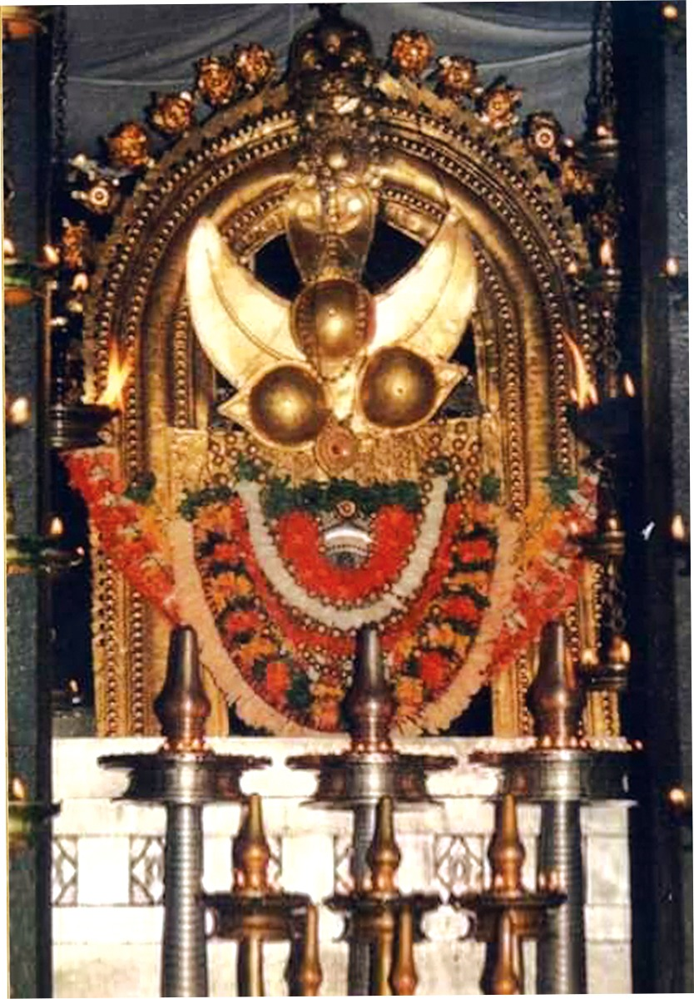

Sree Rajarajeshwara Temple
Temple Timings
To ensure a peaceful and fulfilling darshan, please note the temple's operational hours:
Darshan Timings:
- Morning: 05:00 AM to 12:00 PM
- Evening: 05:00 PM to 08:30 PM
Office Timings:
- Monday - Saturday: 10:00 AM to 05:00 PM
- Sunday: Closed
Note: Timings are subject to change during festivals and special occasions. It is advisable to check the latest announcements.
Facilities
Accommodation facilities are available for devotees at the Devaswom guest house. There are boarding and lodging facilities in Taliparamba city also.
Administration
The temple is administered by TTK Devaswom Board. Rajarajeswara temple is a special grade temple under the TTK Devaswom Board.
Contact Details
AdministratorTaliparamba Rajarajeswara Temple
Taliparamba – 670 141
Kannur District, Kerala
Office Phone: 0460 2203457
Temple Enquiry Phone: 0460 2200723